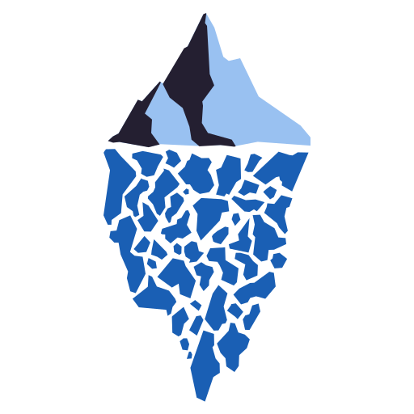

We believe security software like Whonix needs to remain Open Source and independent. Would you help sustain and grow the project? Learn more about our 14 year success story and maybe DONATE!
StylometryDocumentationGeo-blockingPrevious page: StylometryIndex page: DocumentationNext page: Geo-blockingMetadata

Anonymize Files - Clear Metadata - Remove Location Tracking - Use the Metadata Anonymisation Toolkit v2 (MAT2)
Introduction
 Warning: Office documents, pictures, videos and other
files contain significant information in the meta tags that may
de-anonymize the author. Before they are uploaded to the Internet or
shared, this metadata should be removed.
Warning: Office documents, pictures, videos and other
files contain significant information in the meta tags that may
de-anonymize the author. Before they are uploaded to the Internet or
shared, this metadata should be removed.
For more information about metadata, refer to the Metadata anonymisation toolkit v2 (MAT2) Debian package or the MAT2 homepage. Additional information can be found on the Warning page; see Whonix does not clear Document Metadata.
Metadata Risk
Metadata attached to files cannot be used to de-anonymize the user if the guidelines in this section are followed. However, whistleblowers should be aware of a host of other metadata and techniques that can be used to narrow the search for (or identify) leakers, including: [1]
- A list of persons who searched for, accessed or printed relevant documents.
- Persons inserting hardware devices like USBs into corporate computers, or those taking screenshots.
- Location data for handheld devices.
- Downloads and use of Tor Browser, Tails, Whonix or other anonymity, privacy, security and encryption (or related) software which is relatively unpopular.
- Inspection of ISP/corporate metadata associated with:
- Usernames, email addresses, physical addresses, phone numbers and credit card numbers.
- Internet IP addresses and log on data.
- Clearnet browsing and use of the Tor network.
- All communications metadata, including the type, source and destination, and the file size and duration of the communication. This includes emails and (encrypted) messaging.
- Via search warrants, sourcing all data from Google, Facebook and other corporate accounts; for example, all Gmail messages, Google History, web browser activity based on web browser cookies, and backups of (Android) phones.
- Other information discovered after forensic analysis of personal computers, external HDDs/SSDs, phones and other devices.
Be aware that most whistleblowers are identified by events and patterns of behavior that happen before they decide to blow the whistle or contact the media.
Guidelines
General Principles
- Always think twice before uploading/sharing anything.
- Only upload/share files which were either created or downloaded inside the Whonix-Workstation™ and personally stripped of metadata.
- Before uploading/sharing photos or videos, it is safest to utilize a separate camera that is only used for anonymous purposes (unless the user is an expert).
Specific File Format Data Leakage
- Anonymous photo sharing requires consideration of both metadata and fingerprintable camera anomalies.
- Files created by editing software -- such as Microsoft Word, LibreOffice, Excel and so on -- can leak information about incremental edits and updates. Re-saving a final copy of the document might be enough to mitigate this risk, but further research is required.
- If JPEG images are stored in PDFs in their complete form without modification, EXIF data can be leaked.
- It is possible for adversaries to link 'anonymous' audio recordings to specific hardware (microphone) that is used, as well as fingerprint embedded audio acoustics associated with particular speakers -- the same operational security advice recommended for photographs must be followed.
- This is an inexhaustive list of file format leak problems and the user should understand that file format specifications are not designed with potential adversaries in mind. [2]
File System Data Leakage
- Formats of metadata added by filesystems such as timing resolution of the datetime field, can reveal information about the origin, time and transport method of source files in question.
Case study: WikiLeaks DNC release. [3] MAT2 cannot
help in this instance. [4] Copying files with
rsync or cp has been shown to destroy the
metadata contained in the "birth" field [5] and is
therefore the recommended precaution. [6]
Linux filesystems like EXT4 have recently been extended to include file creation time. It can be read using debugfs [7], crtime [8] or xstat [9]. Dedicated tools to scrub this is preferred. [10]
N.B. A file's ctime (time created), mtime (time modified) and atime
(time accessed) metadata are not related to the crtime/brtime issue
discussed above. These can be reset to the current time using
touch:
touch newfile <file>
To check their values use stat:
stat <file>
Scrubbing Metadata
Generally speaking, the only reliable way to scrub any type of document and avoid unintended leaks is to first use Imagemagick to convert them to images, then import them into a new PDF before distribution. This technique is reportedly used by advanced adversaries. [2]
This recommendation comes with an important caveat: untrusted files that are downloaded cannot be sanitized in this way, since malicious data can be crafted to remain intact even if processed by a format encoder. Therefore, the best way to interact with these files is to utilize the Whonix-Workstation and sanitize them with the pre-installed MAT2 program. [11]
Failure to remove metadata does not always lead to de-anonymization, but it still may result in identity correlation to the same pseudonym. Consider the following example:
- A video is created with media software and uploaded to a popular video portal under pseudonym A.
- Another video is created using the same software and computer and uploaded under pseudonym B.
- An adversary who checks the metadata of both video files would quickly correlate both pseudonyms.
Warning on Leaking Original Source Documents
 In recent times, leakers of high-value or high-security source documents
have been identified (and jailed) via embedded
steganographic messages or the zero-width
space (homoglyph substitution) technique. [12]
In recent times, leakers of high-value or high-security source documents
have been identified (and jailed) via embedded
steganographic messages or the zero-width
space (homoglyph substitution) technique. [12]
It is highly unlikely that file cleaners will defeat these advanced fingerprinting methods. Persons who are considering leaking valuable, original source documents should adopt a far safer approach to avoid the threat of embedded signatures. Recommendations include: [13]
- Manually retype the related disclosures in a basic text editor which can easily be stripped of meta-data.
- Only leak short excerpts so the amount of information shared is kept to a minimum.
- At all times, avoid releasing the original documents in their raw form.
- Source the same documents from multiple leakers to confirm the content is identical byte-wise.
Specific cleaning tools do exist that strip non-whitelisted characters from the text. However, this is the least preferred approach for "safely" sharing documents if personal liberty is at stake.
MAT2: Metadata Anonymisation Toolkit v2
At the time of writing, the latest version of MAT2 currently supports the following file formats: [14]
- Audio Video Interleave (.avi)
- Electronic Publication (.epub)
- Free Lossless Audio Codec (.flac)
- Graphics Interchange Format (.gif)
- Hypertext Markup Language (.html)
- Portable Network Graphics (PNG)
- JPEG (.jpeg, .jpg, ...)
- MPEG Audio (.mp3, .mp2, .mp1, .mpa)
- MPEG-4 (.mp4)
- Office Openxml (.docx, .pptx, .xlsx, ...)
- Ogg Vorbis (.ogg)
- Open Document (.odt, .odx, .ods, ...)
- Portable Document Fileformat (.pdf)
- Tape ARchive (.tar, .tar.bz2, .tar.gz)
- Torrent (.torrent)
- Windows Media Video (.wmv)
- ZIP (.zip)
Take careful note of MAT2's limitations: [14]
MAT2 only removes metadata from your files, it does not anonymise their content, nor can it handle watermarking, steganography, or any too custom metadata field/system.
If you really want to be anonymous, use file formats that do not contain any metadata, or better: use plain-text.
Use Instructions
MAT2 does not have a GUI option and must be run from the command line. For a list of available MAT2 options, launch a terminal in Whonix-Workstation and run.
mat2
Note: MAT2 does not clean files in-place. Instead, once 'dirty' files (with removable metadata) are cleaned, the clean files are created in the same directory with the .cleaned extension. For example, "myfile.png" will lead to a new version named "myfile.cleaned.png".
Users also report that MAT2 is broken if bubblewrap is installed,
since it is automatically used for MAT2 sandboxing which is currently
incompatible with Whonix hidepid settings.
[15] [16] [17] If this
error is encountered, it can be bypassed with the
--no-sandbox flag.
Other Tools
- Exiftool - a Perl application for editing metadata in a wide variety of files.
- exiv2 - a C++ application to manage image metadata.
- jhead - a JPEG header manipulation tool.
- pdfparanoia - a tool to remove watermarks from academic papers.
- pdf-redact-tools - Deprecated.
See Also
License
Gratitude is expressed to JonDos for permission to use material from their website. The Metadata page contains content from the JonDonym documentation Anonymizing Documents and Pictures page.
Footnotes
- https://theintercept.com/2019/08/04/whistleblowers-surveillance-fbi-trump/
- https://speakerdeck.com/ange/an-overview-of-pdf-potential-leaks
- WikiLeaks failed to redact some metadata from the DNC release that indicated that the docs were transported to WL via a USB flash drive. USB flash drives are fairly unique in that they usually use FAT32, and FAT32 is unique in that its datetime fields have a resolution of 2 seconds. So it's really easy to tell if files were on a USB flash drive (all the datetime values will be even numbers) unless the datetime metadata is scrubbed. Obviously this exposes some details about how the leak was pulled off, and could potentially expose info about the source, thus WL should have wiped that metadata, but apparently this method of tracing USB flash drive usage via datetime metadata was not widely known (even to WL) at the time that the leak was published. To be clear, my point is not to bash WL, I'm just pointing out that metadata scrubbing is really hard and has a lot of subtlety to it, and it's therefore probably not very wise to totally entrust your safety to such tools, given that even WL hasn't always gotten it right. for bonus points, there's an additional leakage if the datetime values are stored in 2 different archive formats, one of which uses UTC and another uses local time zone (just subtract the datetime values and you get the timezone). This was the case for one of the Guccifer2 releases, thus revealing that the Guccifer2 docs were being moved around on a USB flash drive in the Eastern US time zone several months after the DNC announced that they had been compromised. (Figuring out what this means about the accuracy of media claims regarding that release's origin is left as an exercise for the reader -- but from a forensics standpoint it's definitely something that the leaker wasn't expecting nor intending, and it relies on undocumented behavior in the archiving software.) So yeah. Metadata anonymization is hard. -Jeremy Rand (Namecoin dev)
- mat2 doesn't do anything about this: cleaned files will have a timestamp corresponding to their date of creation, there is little that can be done here, unfortunately. -jvoisin (MAT2 dev)
- crtime on Linux / btime on Windows
- https://www.linuxquestions.org/questions/linux-newbie-8/how-do-i-preserve-crtime-creation-birth-time-when-copying-from-windows-ntfs-to-linux-ext4-4175625229/
- https://tecadmin.net/file-creation-time-linux/
- https://github.com/planetlabs/crtime
- https://github.com/bernd-wechner/Linux-Tools/blob/master/xstat
- In some cases, opening and re-saving a file can help, but that will only set the "modified" time field. A lot of filesystems also store a "created" time field, which will not be affected by opening/saving. Also, some file formats will actually leak additional info about what software opened them if you open/resave them. So I wouldn't really recommend that approach. I think there exist tools that will wipe filesystem timestamp metadata; if such tools exist (I haven't looked very carefully) then they're probably preferable. -Jeremy Rand (Namecoin dev) 3
- Refer to the Metadata anonymisation toolkit v2 website for further information.
- In the latter method, the leaker is unable to see additional zero-width or zero-width non-joiner characters which are used to fingerprint text. Even a single type of zero-width character provides enough bits of entropy to fingerprint the relevant text.
- https://www.zachaysan.com/writing/2017-12-30-zero-width-characters
- https://packages.debian.org/trixie/mat2
- https://forums.whonix.org/t/install-bubblewrap-by-default-to-make-use-of-mat2s-sandboxing/8177
- https://0xacab.org/jvoisin/mat2/issues/120
- https://github.com/containers/bubblewrap/issues/198
Categories: Documentation